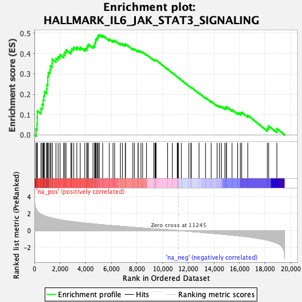
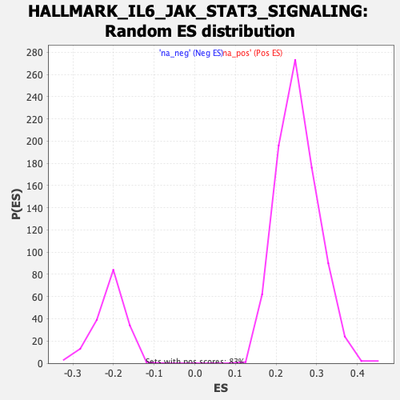

| | | Dataset | Recurrence |
| Phenotype | NoPhenotypeAvailable |
| Upregulated in class | na_pos |
| GeneSet | HALLMARK_IL6_JAK_STAT3_SIGNALING |
| Enrichment Score (ES) | 0.49254268 |
| Normalized Enrichment Score (NES) | 1.9449627 |
| Nominal p-value | 0.0 |
| FDR q-value | 1.5789473E-4 |
| FWER p-Value | 0.001 |
Table: GSEA Results Summary

Fig 1: Enrichment plot: HALLMARK_IL6_JAK_STAT3_SIGNALING
Profile of the Running ES Score & Positions of GeneSet Members on the Rank Ordered List
| SYMBOL | RANK IN GENE LIST | RANK METRIC SCORE | RUNNING ES | CORE ENRICHMENT | | 1 | CXCL13 | 125 | 2.557 | 0.0282 | Yes |
| 2 | CXCL9 | 196 | 2.390 | 0.0569 | Yes |
| 3 | CD36 | 217 | 2.348 | 0.0877 | Yes |
| 4 | IL13RA1 | 225 | 2.317 | 0.1187 | Yes |
| 5 | CD44 | 511 | 1.924 | 0.1301 | Yes |
| 6 | IL4R | 603 | 1.855 | 0.1505 | Yes |
| 7 | JUN | 682 | 1.806 | 0.1709 | Yes |
| 8 | IL18R1 | 734 | 1.770 | 0.1922 | Yes |
| 9 | STAT1 | 797 | 1.736 | 0.2125 | Yes |
| 10 | IL1R1 | 950 | 1.643 | 0.2269 | Yes |
| 11 | CXCL11 | 977 | 1.633 | 0.2477 | Yes |
| 12 | IL2RG | 1042 | 1.600 | 0.2660 | Yes |
| 13 | TNFRSF1B | 1044 | 1.598 | 0.2876 | Yes |
| 14 | TNFRSF21 | 1084 | 1.578 | 0.3070 | Yes |
| 15 | ACVRL1 | 1214 | 1.527 | 0.3210 | Yes |
| 16 | PIK3R5 | 1254 | 1.511 | 0.3394 | Yes |
| 17 | CCR1 | 1376 | 1.465 | 0.3530 | Yes |
| 18 | CSF1 | 1386 | 1.461 | 0.3724 | Yes |
| 19 | TNFRSF1A | 1682 | 1.359 | 0.3756 | Yes |
| 20 | IFNAR1 | 1849 | 1.302 | 0.3847 | Yes |
| 21 | LEPR | 1996 | 1.266 | 0.3943 | Yes |
| 22 | IRF9 | 2285 | 1.201 | 0.3957 | Yes |
| 23 | EBI3 | 2372 | 1.178 | 0.4072 | Yes |
| 24 | HMOX1 | 2465 | 1.158 | 0.4182 | Yes |
| 25 | CSF2RA | 2851 | 1.078 | 0.4129 | Yes |
| 26 | CSF2RB | 2915 | 1.066 | 0.4241 | Yes |
| 27 | A2M | 3064 | 1.039 | 0.4306 | Yes |
| 28 | CXCL10 | 3307 | 0.993 | 0.4316 | Yes |
| 29 | IL1B | 3573 | 0.946 | 0.4307 | Yes |
| 30 | SOCS1 | 3932 | 0.885 | 0.4243 | Yes |
| 31 | IL3RA | 4094 | 0.859 | 0.4276 | Yes |
| 32 | PLA2G2A | 4127 | 0.855 | 0.4375 | Yes |
| 33 | IFNGR1 | 4208 | 0.843 | 0.4448 | Yes |
| 34 | CXCL3 | 4572 | 0.791 | 0.4369 | Yes |
| 35 | IL17RA | 4710 | 0.771 | 0.4402 | Yes |
| 36 | LTBR | 4712 | 0.771 | 0.4506 | Yes |
| 37 | HAX1 | 4761 | 0.763 | 0.4585 | Yes |
| 38 | CD14 | 4776 | 0.761 | 0.4681 | Yes |
| 39 | MYD88 | 4851 | 0.746 | 0.4743 | Yes |
| 40 | CSF3R | 4937 | 0.734 | 0.4799 | Yes |
| 41 | OSMR | 4975 | 0.728 | 0.4879 | Yes |
| 42 | STAM2 | 5073 | 0.715 | 0.4925 | Yes |
| 43 | ITGA4 | 5325 | 0.681 | 0.4888 | No |
| 44 | IL7 | 5844 | 0.613 | 0.4705 | No |
| 45 | PDGFC | 6130 | 0.577 | 0.4636 | No |
| 46 | SOCS3 | 6258 | 0.560 | 0.4647 | No |
| 47 | CXCL1 | 6705 | 0.508 | 0.4486 | No |
| 48 | CD38 | 6867 | 0.489 | 0.4469 | No |
| 49 | CRLF2 | 7086 | 0.460 | 0.4419 | No |
| 50 | TNFRSF12A | 7109 | 0.456 | 0.4470 | No |
| 51 | MAP3K8 | 7676 | 0.390 | 0.4232 | No |
| 52 | CBL | 7795 | 0.376 | 0.4222 | No |
| 53 | IL15RA | 8080 | 0.344 | 0.4122 | No |
| 54 | IL10RB | 8097 | 0.342 | 0.4160 | No |
| 55 | PTPN2 | 8305 | 0.320 | 0.4097 | No |
| 56 | CCL7 | 8439 | 0.306 | 0.4070 | No |
| 57 | TGFB1 | 8747 | 0.276 | 0.3949 | No |
| 58 | IL2RA | 9317 | 0.211 | 0.3685 | No |
| 59 | IFNGR2 | 9412 | 0.201 | 0.3664 | No |
| 60 | CSF2 | 9452 | 0.198 | 0.3671 | No |
| 61 | IL6ST | 9493 | 0.192 | 0.3676 | No |
| 62 | TNF | 10392 | 0.096 | 0.3227 | No |
| 63 | ACVR1B | 10760 | 0.056 | 0.3046 | No |
| 64 | IL9R | 11142 | 0.013 | 0.2852 | No |
| 65 | STAT2 | 11186 | 0.007 | 0.2830 | No |
| 66 | INHBE | 11233 | 0.001 | 0.2807 | No |
| 67 | TYK2 | 11465 | -0.024 | 0.2691 | No |
| 68 | ITGB3 | 12050 | -0.093 | 0.2404 | No |
| 69 | IRF1 | 12207 | -0.112 | 0.2338 | No |
| 70 | DNTT | 12242 | -0.117 | 0.2337 | No |
| 71 | PTPN11 | 12843 | -0.188 | 0.2054 | No |
| 72 | IL12RB1 | 13349 | -0.259 | 0.1829 | No |
| 73 | PIM1 | 13796 | -0.319 | 0.1643 | No |
| 74 | CD9 | 14251 | -0.377 | 0.1460 | No |
| 75 | PTPN1 | 14434 | -0.400 | 0.1421 | No |
| 76 | FAS | 14582 | -0.420 | 0.1402 | No |
| 77 | REG1A | 14859 | -0.458 | 0.1322 | No |
| 78 | IL6 | 14972 | -0.474 | 0.1328 | No |
| 79 | CNTFR | 14978 | -0.475 | 0.1390 | No |
| 80 | LTB | 15416 | -0.541 | 0.1238 | No |
| 81 | BAK1 | 15859 | -0.611 | 0.1094 | No |
| 82 | STAT3 | 16073 | -0.645 | 0.1071 | No |
| 83 | IL1R2 | 16167 | -0.659 | 0.1112 | No |
| 84 | PF4 | 16643 | -0.742 | 0.0968 | No |
| 85 | IL17RB | 18173 | -1.133 | 0.0335 | No |
| 86 | TLR2 | 18276 | -1.168 | 0.0441 | No |
| 87 | GRB2 | 18916 | -1.483 | 0.0313 | No |
Table: GSEA details [plain text format]

Fig 2: HALLMARK_IL6_JAK_STAT3_SIGNALING: Random ES distribution
Gene set null distribution of ES for HALLMARK_IL6_JAK_STAT3_SIGNALING